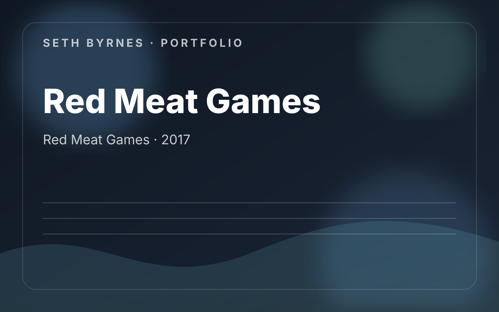

Red Meat Games · 2017
Red Meat Games / First Impact / Onslaught
Early studio experience split across a shipped VR title and a Samsung VR wave-shooter mode that became its own release. The work combined design support, implementation help, and practical QA.

Contribution Areas
- Designed levels, progression, and enemy attack waves for the Onslaught wave-shooter release on Samsung VR.
- Worked as QA with minor design support on First Impact: Rise of a Hero, testing levels and superpowers.
- Made minor in-engine adjustments when content or implementation broke.
- Worked with a junior programmer and supported feature development and tuning.
What I Owned
- Arena flow and progression
- Wave composition and difficulty escalation
- VR combat-space readability
- QA and implementation support
What This Work Demonstrates
- Important early example of level design in a shipped VR context.
- Shows comfort moving between design, tuning, and hands-on support.
- Connects directly to later VR and systems work.
Project Summary
Level design, progression, enemy wave structure, implementation support, and QA for VR action work on Samsung GearVR.